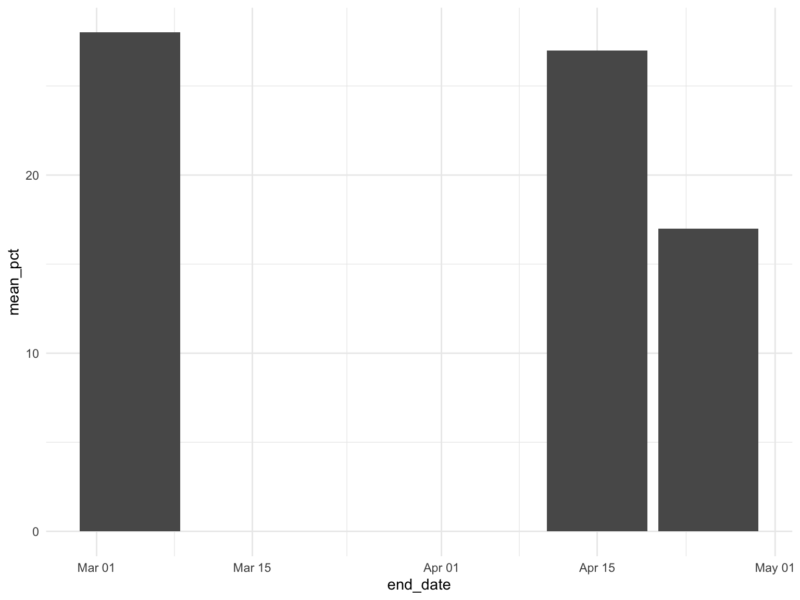

Home
Key Variables
Debate 4
Google Trends
<<<<<<< HEAD =======
Key Campaign Events and Their Impacts on Polling Performance
Introduction
Former Vice President Joe Biden

Senator Elizabeth Warren
Senator Bernie Sanders
>>>>>>> f6b409c7983d5ac9f25405fb647d2ecaa1b10651